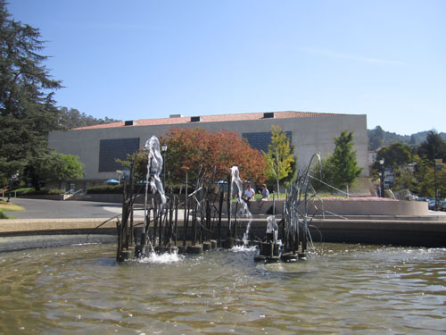
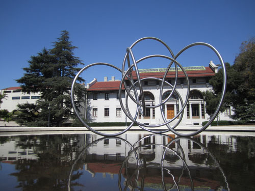
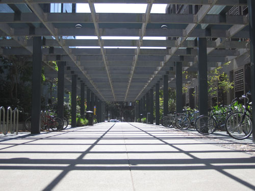
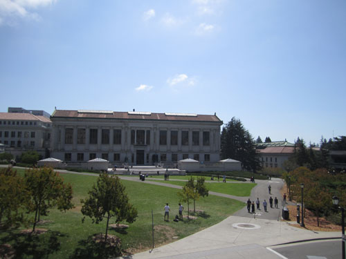
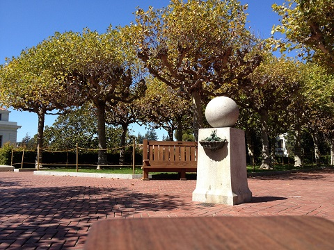

Project 2: Building a Pinhole Camera
Eric Chu (cs194-??), Akshay Narayan (cs194-??), and Japheth Wong (cs194-fb) | University of California, Berkeley | Prof. Alexei (Alyosha) Efros
Navigation
Project Overview
The goal of this project was to build a working pinhole camera in order to better understand the basic mechanics of how cameras capture images. At a basic level, a camera lets in a small amount of light through its aperture during the time interval that the camera's shutter is opened. The light that enters is projected onto a screen (usually a sensor in a camera), inverted, allowing the viewer to see a 2-D representation of the world around him or her. Our pinhole simulates the aperture, and the shutter speed of the connected DSLR camera (used to allow us to record the images displayed on the screen) is used to help the viewer see the faint image that is projected.
Back to TopOur Camera Design
There were a few important components to consider in designing the camera:
Camera Body
The first step was to select a box to serve as the camera's body. The main constraints for our box included:
It had to be long enough in length to allow our DSLR camera to focus on the screen and accurately record the projected image.
It had to have a screen area large enough for us to project images onto.
It had to be study enough for us to successfully attach a DSLR camera snugly and securely to limit the amount of light entering the camera obscura.
We opted to use a large shoebox, placing the screen on one end and our DSLR camera on the other. Using this box, we were able to insert the other elements of our camera obscura as shown in Figure 1.
Projection Screen
Our initial design for the screen was to attach a white piece of printer paper to the end of our box. We quickly encountered a problem: the shoebox we were using was not rigid enough, nor was the sheet of paper we were using as the screen. The result was a screen which was not flat: the screen bent inwards at a few places, which would certainly ruin image quality. We remedied this issue by adding a cardboard backing to our screen, which we then attached to the end of the shoebox.
Aperture Control
In order to test multiple pinhole sizes, we needed a mechanism that would allow us to (i) easily change pinhole sizes and (ii) ensure that no light was able to leak in through this window. Our original solution was to cut a slit inside the box (between the layers of cardboard) and insert a card with the pinhole. This would allow us to use the box to ensure our pinhole card was snug against the window. Unfortunately, while lightproofing the box, we realized we needed to tape shut the lid with the box, which would make it impossible for us to switch pinhole cards. Instead, we modified our solution to include a slot attached onto the front of the box to secure the pinhole cards in place.
DSLR Camera Fixtures
We attempted to align our DSLR camera vertically with the pinhole, which meant that the body of the camera would need to be suspended a few inches above the surface our camera obscura would be resting on. Our solution was to use duct tape to create a sling to wrap around the camera body and hold it in place. Each time we wish to check the image, we have to remove the camera from the sling, but it helps ensure that the camera is aligned correctly. This also helped reduce the amount of light that can leak into the camera obscura, since the strap forces the lens of the DSLR camera to fit snugly against the side of our camera obscura.
Lightproofing
This proved to be a large challenge. After an initial step of lining the inside of the camera obscura with black construction paper and duct tape, we found light leaking in from the lid, forcing us to seal the gaps between the lid and the rest of the shoebox. In the end, we discovered that there was a small amount of light leaking in from the hole which we connect our DSLR camera's lens to. After many efforts to remedy this issue, we decided instead to wrap a jacket around the camera, similar to early cameras, which successfully resolved the issue.
The Final Product
Results
Initial Results (With Different Pinhole Sizes)
For the first two scenes, we took photos using all three of our pinholes in order to determine the ideal pinhole size. Listed below are the images that we took (flipped right-side up) as well as a reference image at the scene taken by a digital camera. The reference image was taken by placing a digital camera on top of the box and shot without any zoom.
Reference Image |
1mm Pinhole |
3mm Pinhole |
4.5mm Pinhole |
| Kroeber Fountain (Map) | |||
|  | Insert image here! |
Insert image here! |
Insert image here! |
| Faculty Glade (Map) | |||
 |
Insert image here! |
Insert image here! |
Insert image here! |
Tradeoffs with Pinhole Size
Fill this in with an explanation of what happens when we have larger vs smaller pinholes.
Additional Results
As before, the reference image was taken by placing a digital camera on top of the camera obscura and shooting without using any zoom.
Reference Image |
Camera Obscura Image |
Photo Details |
| Hearst Mining Circle (Map) | ||
|  | Insert image here! |
Insert image here! |
| Soda Breezeway (Map) | ||
|  | Insert image here! |
Insert image here! |
| Memorial Glade (Map) | ||
|  | Insert image here! |
Insert image here! |
| Campanile Stone Ball (Map) | ||
|  | Insert image here! |
Insert image here! |
Bells and Whistles
We did not get a chance to try out any bells and whistles. We had considered doing light painting, but even in broad daylight (at noon), we were using exposure times of 25 seconds just to capture enough light. Unfortunately, our DSLR camera did not have the capability to keep the shutter open for longer than 30 seconds.
Back to Top